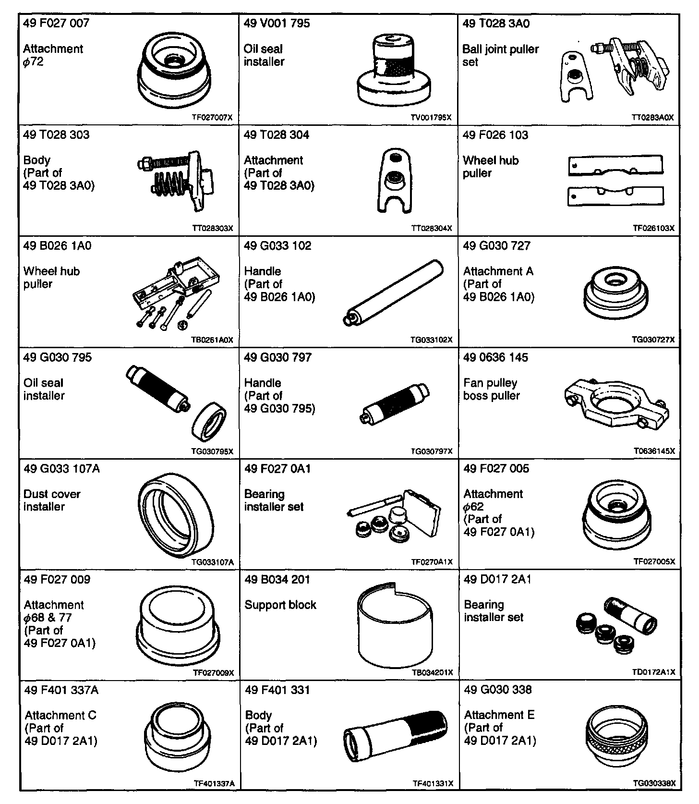
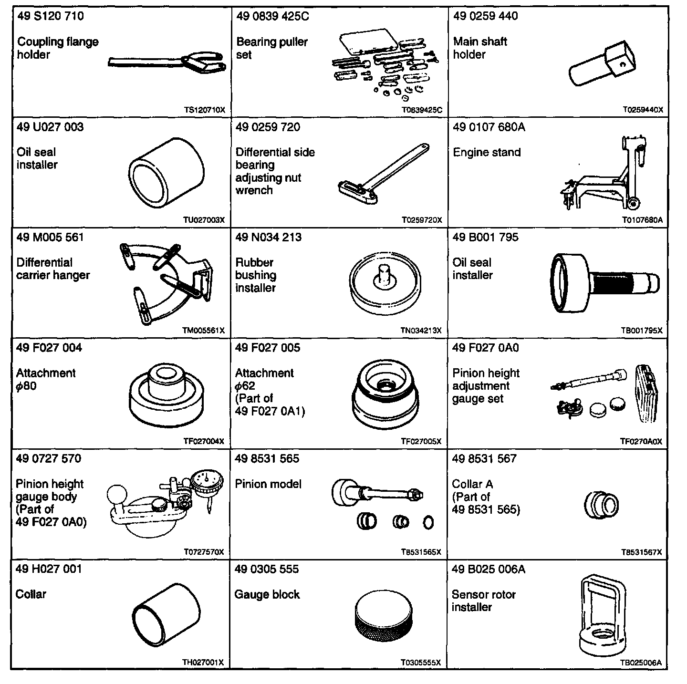

Operation CHARM
: Car repair manuals for everyone.
Home
>>
Mazda
>>
1999
>>
MX-5 Miata L4-1.8L DOHC
>>
Repair and Diagnosis
>>
Transmission and Drivetrain
>>
Drive/Propeller Shafts, Bearings and Joints
>>
Drive/Propeller Shaft
>>
Tools and Equipment
Drive/Propeller Shaft: Tools and Equipment


DRIVELINE/AXLE SST